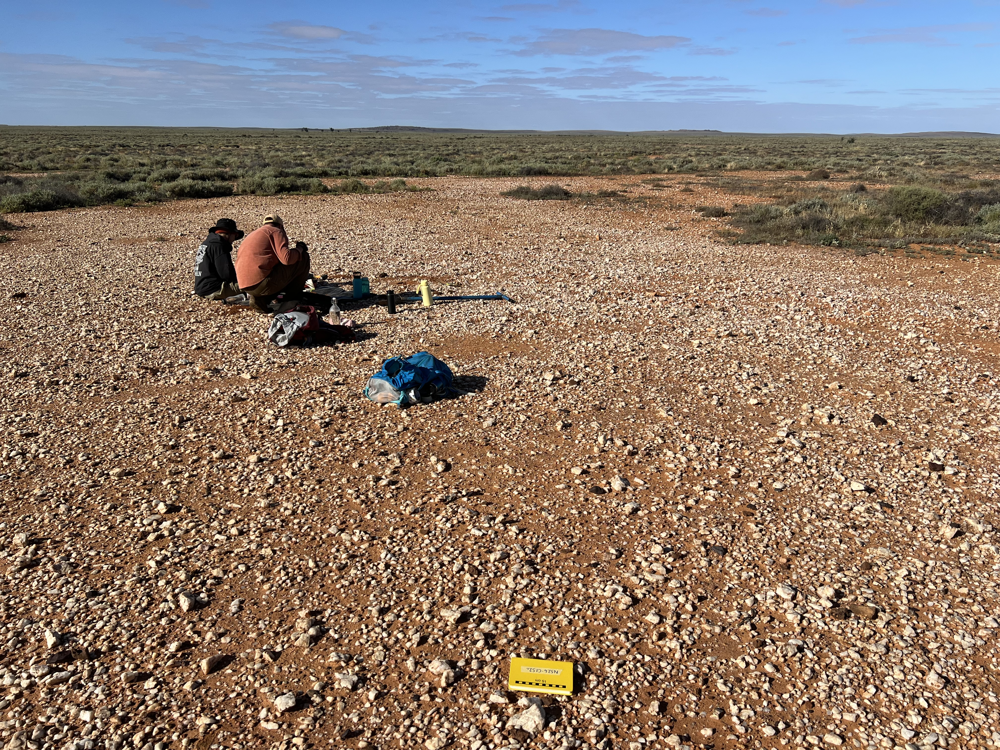
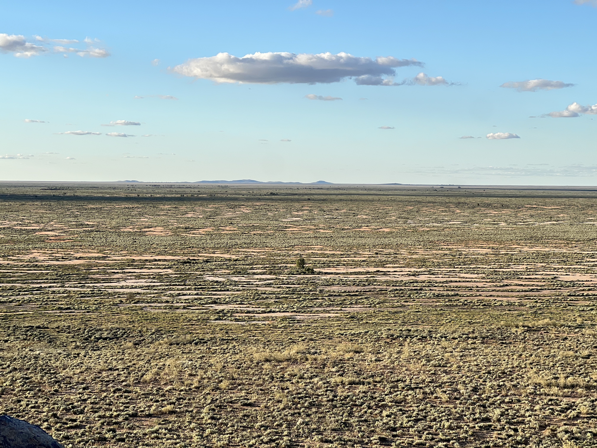
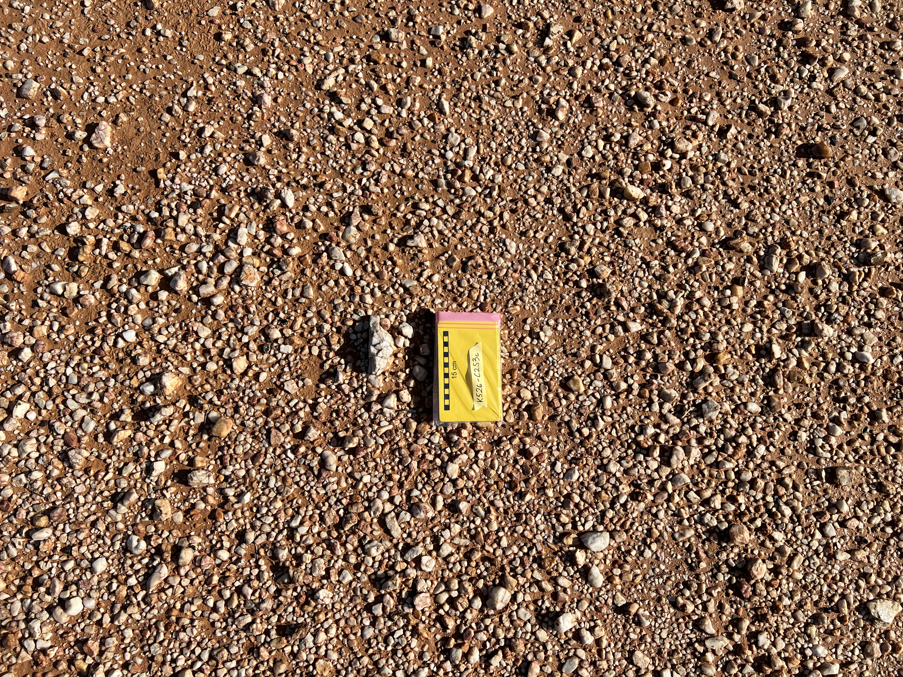

02 · Research
Co-evolution of desert pavements and banded vegetation
closedCo-existing systems of banded vegetation and desert pavement have the potential to offer novel paleoclimate proxies capable of deconvolving both paleoprecipitation and vegetation abundance through the Quaternary. Led by my PhD student, Ida Gaulke, this work aims to identify the geomorphic processes responsible for regolith and desert pavement formation at Boolcoomatta Reserve, South Australia.



Desert pavements are surficial monolayers of gravels (pebbles and cobbles) that protect an underlying fine-grained soil/sandy matrix and can persist on the surface for long periods (i.e., >100 kyr) of time. Because of this longevity, resolving the primary evolutionary mechanisms of desert pavement formation and preservation remains a long-standing geomorphic challenge. Frequently co-occurring with these stony pavements is banded vegetation—a self-organising ecosystem adaptation to water scarcity, characterised by alternating bands of vegetation separated by bare interbands. Because band spacing and terrace geometry are modulated by slope and precipitation, any lag or persistence of these patterns, potentially due to the stabilising presence of desert pavement, may preserve a record of past climate regimes.
Despite extensive independent study of both systems, fundamental questions remain about the formation and maintenance of desert pavements in environments that also support banded vegetation, and how the presence of a pavement modulates banded vegetation dynamics. This project aims to pair mechanistic models of desert pavement genesis with cosmogenic nuclide (Be-10 and Al-26) accumulation histories to determine whether these coupled landscapes exist in equilibrium with modern precipitation or persist as relict signatures of paleoprecipitation. This work is being carried out in Boolcoomatta Reserve in South Australia, where extensive banding of chenopod shrubland co-occurring with quartz-rich desert pavement on low-angle (0-3%) slopes provides the ideal study location.
← all research